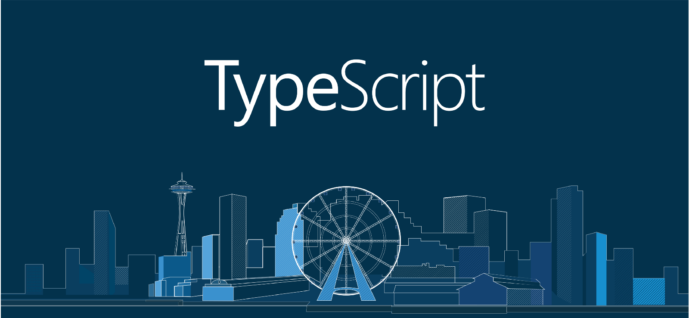

Veille technologique
Voici la veille technologique que j’ai réalisé sur le thème du langage de programmation TypeScript.
Sujet choisi
Pour ma veille technologique, j’ai choisi de traiter le langage de programmation open source TypeScript, développé par Microsoft et publié depuis 2012. Il s’agit d’un sur-ensemble syntaxique de JavaScript (sur-couche du JavaScript), utilisé pour améliorer et rendre plus sécurisés les codes JavaScript produits.
Le TypeScript a été créé par Anders Hejlsberg, programmeur danois inventeur principal du C#. Le code est compilé en JavaScript et peut être lu par n’importe quel navigateur moderne disposant du moteur JavaScript. L’extension des fichiers du langage est « .ts ».
La dernière version du TypeScript est la 4.5, en date du 18 novembre 2021.
J’ai choisi de traiter ce sujet car j’ai entendu parler de ce langage par un ami travaillant dans une entreprise de développement, et parce qu’il me semblait pertinent de le présenter au vu de sa proximité avec le JavaScript. Il s’agit aussi d’un langage qui monte petit à petit auprès des développeurs, du fait de la popularité déjà bien établie du JavaScript et de la sécurité offerte par le langage TS.
Problématique
La problématique que j’ai extrait de ma veille est la suivante:
Comment le TypeScript s’impose t-il petit à petit comme un langage de référence dans le monde du développement web ?
Cette problématique me semble pertinente de la montée en puissance récente de TypeScript et de son entrée nouvelle dans le top 10 des langages de programmation préférés des développeurs. Pour tenter d’y répondre, j’ai utilisé plusieurs outils de collecte et de synthèse que j’ai intégré au sein de ma veille.
Analyse du sujet
Pour mon analyse du sujet, j’ai utilisé la méthode QQOQCP.
| Qui ? | Le TypeScript est utilisé par des développeurs web voulant sécuriser et améliorer du code JavaScript. |
| Quoi ? | Le code des sites web dynamiques. |
| Où ? | Sur les sites web d’entreprises comprenant des applications complexes principalement. |
| Quand ? | Au chargement de la page par un visiteur du site web. |
| Comment ? | Par la mise en place de codes TypeScript sur des scripts JS existants, ou en codant directement en TS. |
| Pourquoi ? | L’objectif est d’améliorer et de sécuriser le JavaScript. |
Méthodes de collecte
Pour la collecte d’informations, j’ai principalement utilisé la méthode PULL, bien que la méthode PUSH fut aussi utilisée.
Méthode PULL |
Méthode PUSH |
|---|---|
| DuckDuckGo J’ai utilisé le moteur de recherche DuckDuckGo pour des recherches d’informations sur le TypeScript en général, tels que celles utilisés dans la présentation du sujet. |
Google Alertes J’ai paramétré le système d’alerte de Google en utilisant mon adresse mail et en incluant les mots-clés « JavaScript » et « TypeScript » pour ainsi être alerté et récupérer les articles liés au sujet. |
| Google Quand DuckDuckGo ne trouvait pas de résultats concluants pour certaines requêtes, j’ai utilisé le moteur de recherche Google qui m’a retourné des résultats plus précis. |
Feedly J’ai utilisé l’agrégateur de flux Feedly, où j’ai suivi les flux TypeScript sur les médias suivants : les blogs de développement officiels Microsoft, la communauté Channel9, le subreddit r/TypeScript et le mot clé « TypeScript » sur Medium.com. |
Difficultés rencontrées:
- Peu d'articles sur le sujet en général
- Très peu d’articles en français avec la méthode PUSH
- Recours important à la méthode PULL du fait du manque d’articles avec la méthode PUSH
Méthodes de synthétisation
Pour synthétiser les informations que j’ai récupérer grâce aux méthodes PULL et PUSH, j’ai mis en place le tableau de notation ci-dessous.
| N° | Article | Résumé | Pertinence | Actualité |
|---|---|---|---|---|
| 1 | https://tsh.io/blog/typescript-vs-javascript-comparison/ | Comparaison de TypeScript vs JavaScript | 3/3 | 3/3 (2021) |
| 2 | https://typescript.developpez.com/actu/313360/Comment-un-developpeur-JavaScript-anti-TypeScript-est-devenu-un-fan-de-TypeScript-Voici-les-raisons-de-Chirag-Swadia-un-developpeur-JavaScript-reconverti-en-developpeur-TypeScript/ | Raisons de la conversion d’un développeur JS en développeur TS | 3/3 | 3/3 (2021) |
| 3 | https://www.lemondeinformatique.fr/actualites/lire-plusieurs-ameliorations-pour-la-release-candidate-d-angular-12-82757.html | Angular 12, basé sur TypeScript | 2/3 | 3/3 (2021) |
| 4 | https://www.lemondeinformatique.fr/actualites/lire-vuejs-30-rapidite-du-rendu-et-support-ameliore-de-typescript-79400.html | Prise en charge par VueJS de TS | 3/3 | 2/3 (2020) |
| 5 | https://www.programmez.com/actualites/typescript-45-33261 | Nouvelle version 4.5 de TypeScript | 3/3 | 3/3 (2021) |
Synthèse
Le JavaScript est aujourd’hui le langage le plus plébiscité au monde par les développeurs selon le sondage annuel publié par StackOverflow, et cela pour la 8ème année consécutive. La popularité du JavaScript s’explique par sa simplicité d’usage et d’accessibilité (il suffit d’un editeur de texte et d’un navigateur pour le faire fonctionner), sa flexibilité, son aspect multi-plateforme et ses frameworks modernes tels que Angular, React ou Vue.
Mais cette popularité pourrait se voir bouleversée par la montée en puissance d’un acteur assez méconnu : TypeScript. Ce langage, le 3ème préféré des développeurs en 2021 (sondage StackOverflow), dispose de nombreux avantages quant au JavaScript, bien que basé sur celui-ci.
Le TypeScript est tout d’abord plus accessible que le JavaScript pour les développeurs habitués à la programmation orienté objet tels que C#/PHP/Java, du fait de la ressemblance de sa structure avec ces derniers. D’autre avantages que l’on peut citer sont la correction automatique du code, non incluse sur JavaScript ; la présence d’interfaces, pour les habitués de la POO ; un support accru dans les IDE tel que Visual Studio Code; la facilité de débogage du code ainsi que la rapidité de développement. Cependant, TypeScript nécessite lors de sa première utilisation une configuration importante qui pourrait repousser les novices du développement.

La version la plus récente de TypeScript est la 4.5, disponible depuis le 18 novembre 2021. La version 4.2, sortie en avril, est l’une des plus importantes de 2021; elle ajoute de nouvelles fonctionnalités telles qu’une préservation d’alias plus intelligente, le listage d’éléments dans les types de tuples, l’ajout de la classe abstraite ou des contrôles plus stricts pour l’opérateur « in ». L’équipe de développement est très active et publie des mises à jour régulières pour l’ajout de nouvelles fonctionnalités ou de corrections de bug ; comme celle-ci est financée de Microsoft, mastodonte de l’informatique, il n’y a pas à s’en faire quant à un abandon éventuel du langage.
TypeScript est aussi utilisé comme base pour Angular 12, le framework JS mondialement utilisé de Google, ce qui prouve le sérieux du projet et la confiance qu’accorde les acteurs du secteur en ce projet. De plus, le framework Vue.JS, utilisé notamment pour la création d’interfaces utilisateurs, inclus depuis 2020 le support natif de TypeScript.
TypeScript est donc un langage de programmation de plus en plus répandu, même s’il y a encore un long chemin à faire pour une adoption massive. Mais au vu de sa montée en popularité actuelle, et de ses fonctionnalités accrues, il n’est pas risqué de dire que dans un futur proche, le TypeScript fera partie du top 5 des langages de programmation utilisés par les développeurs.